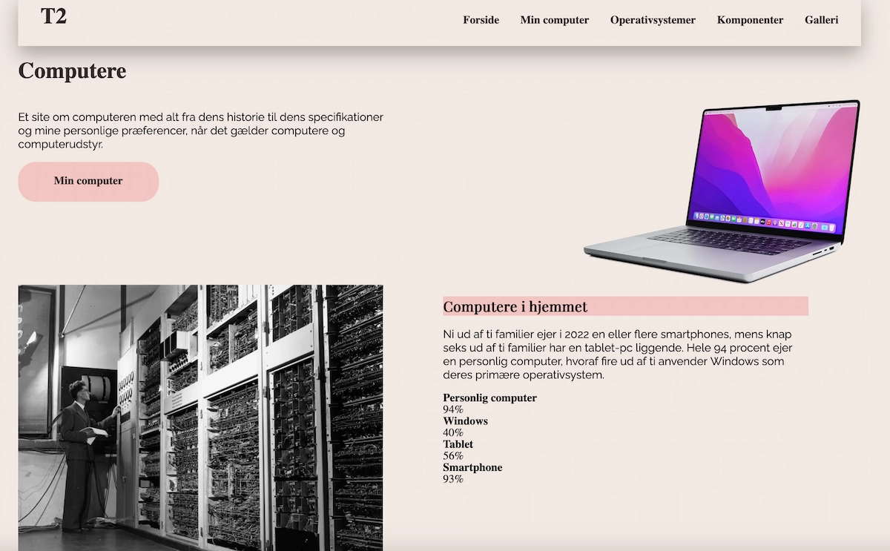

Tema 2 - Grundlæggende Web
Website - Studiestartsprøven
Grundlæggende web
I tema 02 havde vi en studiestartsprøve. Prøven gik ud på at lave en hjemmeside, der skulle handle om “min computer”. vi fik udleveret tekst og billeder, så vi skulle udelukket kun kode den i html, og style den i CSS. Der blev vi præsenteret for html og CSS, hvordan man opsat en html og stylede i CSS. SE MERE
Valg af stil
Jeg valgte i tema 02, at gå med farverne beige og lyserød samt brun. ved overskrifterne, valgte jeg at give dem en baggrundsfarve, for at fremhæve overskriften. loven om lighed spillede også ind, ved at overskrifterne var markeret, både i min punktform, men også mine h2 og h3
Knappen
Jeg havde svært ved at lave min knap. Jeg husker tilbage på det, som var en af de ting som jeg brugte længst tid på. Jeg havde rigtig svært ved at forstå det. jeg prøvede mig lidt frem og tilbage, og hurtig fandt jeg ud af, at det eneste jeg kunne gøre var at prøve mig. det resulterede i, en virkelig flot knap